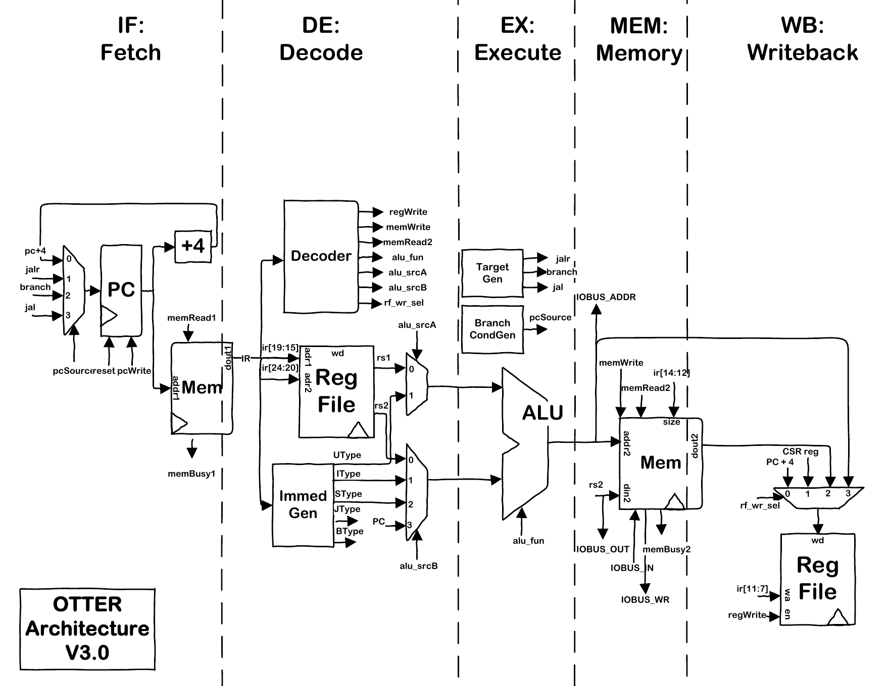
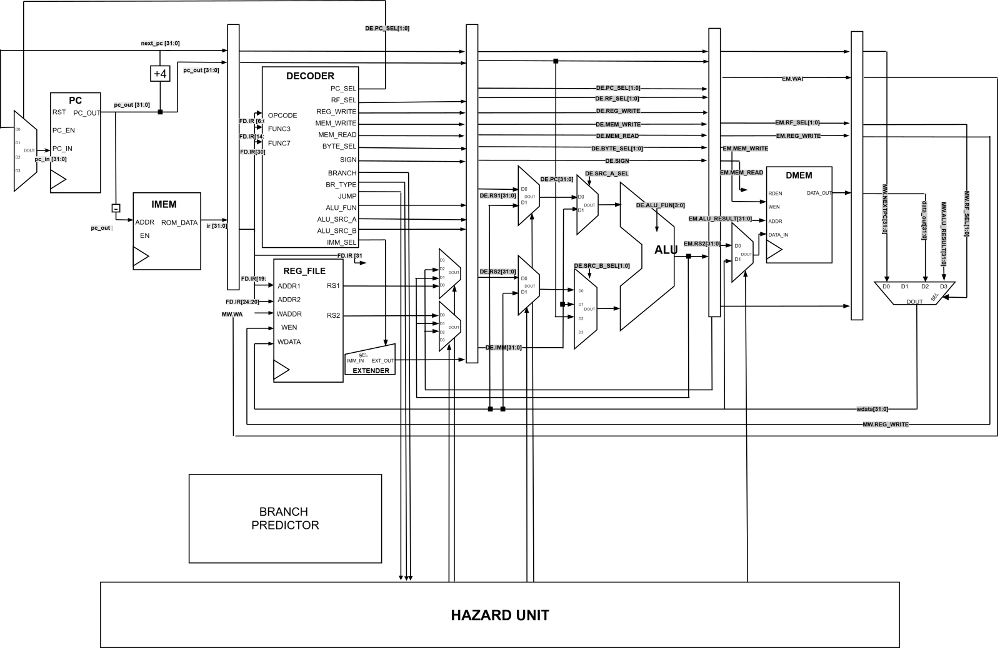

Data Hazards
Forwarding paths allow newer pipeline stages to feed results back toward Execute without waiting for every value to reach Writeback. Load-use cases that cannot be solved with forwarding require a pipeline stall.
This project extends the Cal Poly OTTER RISC-V MCU into a pipelined processor implemented in SystemVerilog and tested on a Basys 3 FPGA. The design grew from the original OTTER datapath into a 5-stage IF / DE / EX / MEM / WB pipeline with forwarding, stalls, flushes, a 2-bit dynamic branch predictor, instruction and data cache work, and additional ISA functionality.
My work focused heavily on computer architecture design, pipeline control, cache behavior, debugging, simulation, and hardware verification.
The starting OTTER MCU is a single-datapath RISC-V design containing the PC, register file, ALU, memory, immediate generation, branch logic, CSR support, and memory-mapped I/O. The project then reorganizes this functionality into a five-stage pipeline so multiple instructions can be in flight at the same time.
The original architecture provides the major datapath building blocks that the pipelined design is built from.
.png)
The pipelined architecture separates instruction work into Fetch, Decode, Execute, Memory, and Writeback. Pipeline registers separate each stage and allow multiple instructions to progress concurrently.

Pipelining improves throughput, but it also creates data and control hazards. The CARP pipeline therefore includes a dedicated hazard unit that coordinates forwarding, stalls, register-write control, pipeline flushes, and branch recovery.
Forwarding paths allow newer pipeline stages to feed results back toward Execute without waiting for every value to reach Writeback. Load-use cases that cannot be solved with forwarding require a pipeline stall.
Branches, JAL, and JALR can redirect the PC. When a predicted path is incorrect, younger instructions are flushed and execution resumes from the recovery PC.
This diagram shows the full pipeline organization with the branch predictor and hazard unit integrated beneath the main datapath.

A branch predictor reduces the number of times the pipeline has to wait for a conditional branch to reach its resolve point. Instead of treating every branch as completely unknown, the processor remembers recent branch behavior and predicts the likely next PC.
Each prediction uses a 2-bit state. Two states predict not-taken and two states predict taken. A single unusual branch result therefore does not immediately reverse a strongly established prediction.
The processor project also explored instruction and data caches. These additions required more than just storage: cache misses had to interact correctly with the PC, pipeline registers, jumps, branches, and writeback logic.
The included Lab 6 report documents an intermediate version of this cache that used a rotating pointer per set as its replacement policy. That milestone was useful for validating set / way addressing and writeback behavior before moving toward more advanced replacement logic.
Five-stage RISC-V execution with register forwarding, load-use stalls, control-hazard flushes, and memory-mapped I/O.
Integer multiply / divide support extends the base integer datapath for workloads that would otherwise require multi-instruction software routines.
The project includes floating-point functionality as part of the broader effort to expand the OTTER into a more capable RISC-V microcomputer.
The design was tested through simulation and on a Basys 3 FPGA using programs such as TestAll and a matrix-multiplication workload.
Much of the engineering work on the project was in the interaction between features. A cache or branch predictor can work correctly in isolation and still fail when a branch redirect, stall, flush, or cache miss occurs on the same cycle. The design was therefore tested at both the module and full-processor level.
The processor used a broad RISC-V assembly test program to exercise arithmetic, branches, jumps, memory accesses, and other instruction behavior.
A larger machine-code image is included with this page as an example workload / memory image used for processor validation.
These are the original architecture diagrams, cache reports, and test artifact used to build this project page.